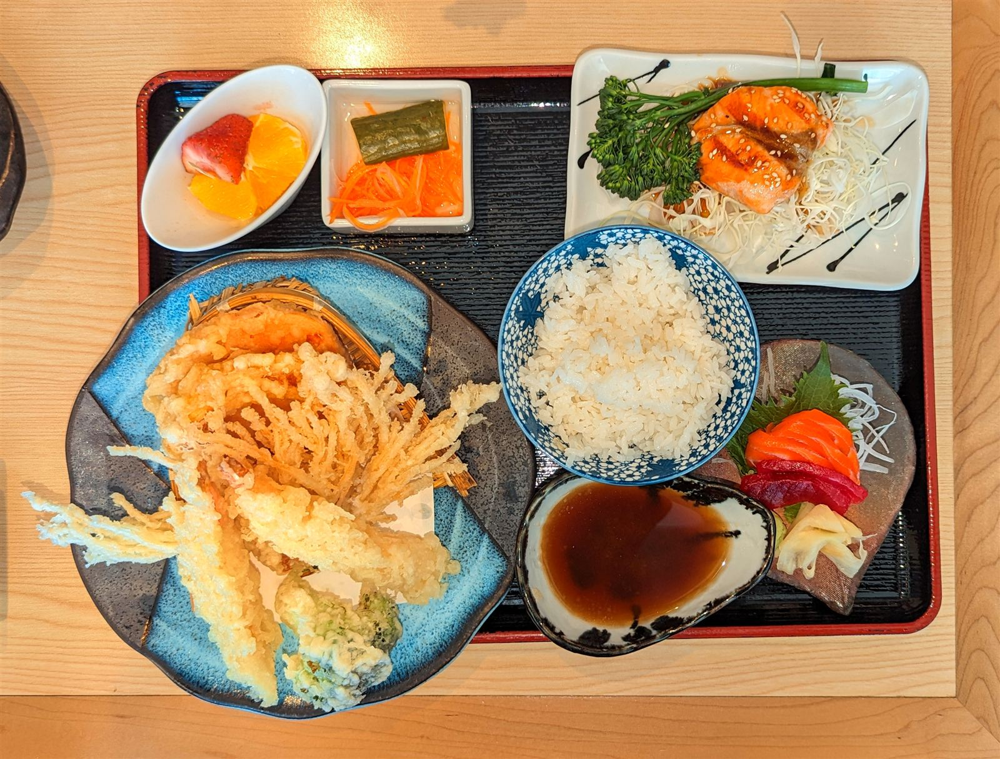
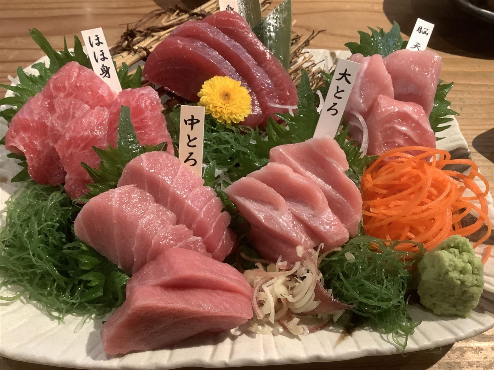

天丼950円、8品の仕事。
海老、キス、茄子、ししとう、南瓜、薩摩芋、竹輪、海苔。 一つの丼に、8品の天ぷらが並びます。 タレは甘みを抑えたキレのある味わいで、天ぷらの油をすっきりと受け止めます。 小鉢・漬物・サラダ・味噌汁が付き、ランチの一食としてしっかり満足いただけると好評です。
- 海老
- キス
- 茄子
- ししとう
- 南瓜
- 薩摩芋
- 竹輪
- 海苔

夜は、天ぷらとお刺身を。
日が暮れてからの弥生は、天ぷらとお刺身が主役です。 天ぷらはサクサクとした衣で、油が重くならないと評判。 お刺身は鮮度の良さに定評があり、じっくり一杯を傾けたい夜にもよく合います。 季節や仕込み状況によっては、いちごと白玉あんのデザートをご用意できる日もございます。
大将と女将、ふたりの持ち場。
厨房を切り盛りするのは、大将と女将、夫婦二人。 それぞれの持ち場から、一つの食事処を作っています。
客席から見える厨房で、大将が一品一品を揚げていきます。 油の温度、衣の厚み。目の前で仕上がっていく様子を眺められるのも、 カウンター席ならではの時間です。
注文をさばき、配膳し、お客様に声をかけるのは女将さんの役目。 厨房はいつも清潔に保たれ、忙しい時間帯もきびきびとした動きで店を支えています。
待つ時間も、ごちそうのうち。
団体のお客様が重なると、料理の提供に時間がかかることがあります。 そんな時も、お冷やを何度も運ぶなど、待つ間を心地よく過ごしていただけるよう気を配っています。 初めてお越しのお客様からも「ゆっくり食事を楽しめた」というお声をいただいており、 急がず、一皿ずつ丁寧に仕上げる時間として受け止めていただければ幸いです。
お客様の声
Googleに寄せられた実際のクチコミから、5件をそのまま掲載しています。 ランチの天丼、夜の天ぷら・お刺身、それぞれのご利用シーンの声をお届けします。
★4.3 Googleクチコミ81件-
初めてのご来店 ★★★★★
何を食べても美味しいです。 厨房も見えますが綺麗で、ご主人のお人柄が出ていると思います。 初訪問でもゆっくり食事を楽しめると思います。
-
ランチのご利用 ★★★★
宿題店を初訪問。12時半頃入店にて先客6名プラス奥座敷に４、５名？ お時間掛かりますとの事だが、構わないので ランチ天丼950と中瓶600を注文。 天ぷらは８品🦐鱚茄子🫑南瓜薩摩芋竹輪海苔 タレは甘みなく、キレある感じ。 付け合わせやサラダもあってコスパ最強！
-
ランチのご利用 ★★★★★
知人に連れて行ってもらいました。初めて来ました。店の隣に駐車場🅿️あり。ランチ利用。私は天丼です。天丼の他に小鉢、漬物、サラダ、味噌汁。メインの天丼にはエビの他に野菜や魚と色とりどり。4人で伺いましたがそれぞれ美味しい美味しいと完食。ごちそうさまでした😋
-
夜のお食事 ★★★★★
夜の食事利用でお邪魔しました！！ 天ぷら、お刺身などれも美味しかったです。 お店の方も親切でまたぜひ行きたいと思いました。
-
夜のお食事 ★★★★
気になっていたお店でしたので夜、伺いました。 2組団体で入ってたようで、提供時間がかかると言われました。 気を遣っていただき、お水を何度も出してもらったりのんびり待っていました。 天ぷらはサクサクしていて、重くなく いい油だったのか、胸やけもしませんでした。 ご飯も程よい固さ。 えびはしっかりとした身でしたので、食べ応えあります。 お刺身も鮮度よく美味しかったです。 デザートは、いちごと白玉あん。 大将と女将さん、お二人で回しているようでずっとパタパタしてました。 最後まで、遅くなってすみませんと謝られましたが、承知で入ったので全然気にしていません。 美味しい、温かいお料理をごちそうさまでした。